|
Herblore
Herblore is only available to RuneScape members. Please subscribe to get this feature.
Herblore is used to make different sorts of potions and poisons. Before you can use herblore you will need to complete the druidic ritual quest .
Identifying herbs
A lot of the herbs you find in the game will be unidentified. To be able to use them you will first need to use your herblore skill to identify them. Just click on a herb to identify it and if you are high enough level it will then become an identified herb type. As your herblore level gets higher you will be able to identify more and more different herbs.
The following is a table showing at what level you will be able to identify each herb. A similar table to the one below can be opened in the game by clicking the herblore skill icon in the stats menu.
|
Herb |
Level |
Herb |
Level |
Guam Leaf
|
Level 3 |
Marrentill
|
Level 5 |
Tarromin
|
Level 11 |
Harralander
|
Level 20 |
Ranarr Weed
|
Level 25 |
Toadflax
|
Level 30 |
Irit Leaf
|
Level 40 |
Avantoe
|
Level 48 |
Kwuarm
|
Level 54 |
Snapdragon
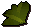 |
Level 59 |
Cadantine
|
Level 65 |
Lantadyme
|
Level 67 |
Dwarf Weed
|
Level 70 |
Torstol
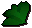 |
Level 75 |
|
|
Mixing potions
| You will need a vial. These can be bought from shops such as the herblore shop in Taverley or made using glassmaking (see the crafting guide). Fill the vial with water from a sink or fountain. To make potions you will need a combination of one identified herb and one other ingredient as shown in the table below. You must add your herb to your vial of water first and then the other ingredient. As you reach higher levels you will be able to make more types of potions. |
 |
Extra-strong and super-strong antipoison and weapon poison potions must be mixed using a vial of coconut milk and two ingredients. Coconut milk can be obtained by smashing a coconut with a hammer, and pouring the milk into a vial.
Potion ingredients
|
Potion ingredients |
Level |
Herb needed |
Second ingredient |
|
Attack potion |
3 |
Guam Leaf |
 |
Eye of Newt |
|
Antipoison potion |
5 |
Marrentill |
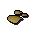 |
Ground unicorn horn |
|
Strength potion |
12 |
Tarromin |
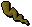 |
Limpwurt root |
|
Stat restore potion |
22 |
Harralander |
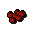 |
Red spider's eggs |
|
Energy potion |
26 |
Harralander |
|
Chocolate Dust |
|
Defence potion |
30 |
Ranarr Weed |
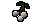 |
White Berries |
|
Agility potion |
34 |
Toadflax |
|
Toads Legs |
|
Restore prayer potion |
38 |
Ranarr Weed |
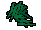 |
Snape Grass |
|
Super attack potion |
45 |
Irit Leaf |
|
Eye of Newt |
|
Super antipoison potion |
48 |
Irit Leaf |
|
Ground unicorn horn |
|
Fishing potion |
50 |
Avantoe |
|
Snape Grass |
|
Super energy potion |
52 |
Avantoe |
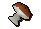 |
Mort Myre Fungi |
|
Super strength potion |
55 |
Kwuarm |
|
Limpwurt root |
|
Weapon poison |
60 |
Kwuarm |
|
Ground Bluedragon scale |
|
Super restore potion |
63 |
Snapdragon |
|
Red spider's eggs |
|
Super defence potion |
66 |
Cadantine |
|
White Berries |
|
Extra-Strong Antipoison potion |
68 |
Toadflax |
|
Yew Roots |
|
Anti-firebreath potion |
69 |
Lantadyme |
|
Ground Bluedragon scale |
|
Ranging potion |
72 |
Dwarf Weed |
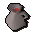 |
Wine of Zamorak |
|
Extra-strong Weapon Poison potion |
73 |
Cactus Spine |
|
Red spider's eggs |
|
Magic potion |
76 |
Lantadyme |
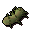 |
Potato Cactus |
|
Potion of Zamorak |
78 |
Torstol |
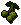 |
Jangerberries |
|
Super-strong Antipoison potion |
79 |
Irit Leaf |
|
Magic Tree Roots |
|
Super-strong Weapon Poison potion |
82 |
Nightshade |
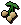 |
Poison-Ivy Berries |
Ground Ingredients
The unicorn horn, blue dragon scale and chocolate (for chocolate dust) need to be ground before they can be used in the potions. To grind them use the pestle and mortar bought from the herblore shop.
Weapon poison
| 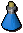 |
The weapon poison can only be used only on certain weapons such as arrows and daggers. Players can be poisoned by other player's poisoned weapons or by a poisonous npc. Extra-strong and super-strong weapon poisons inflict far more damage and their effects last for longer.
A player will slowly take damage from the poison until it either wears off or they drink an anti-poison potion. The potion also grants a small immunity so that the drinker cannot be poisoned for a short while. Extra-strong and super-strong anti-poison potions give much longer periods of immunity. | |